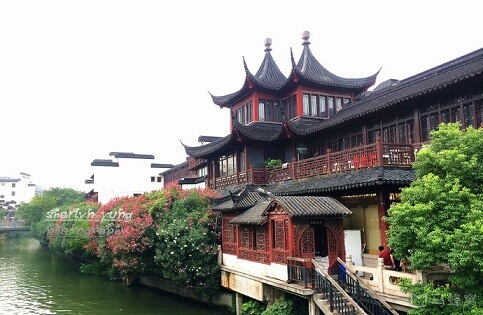

morly旅游圈
有人说，南京是一座伤感的城处处是时代侵蚀的痕迹
她承载了六朝兴衰
在极尽的繁盛与疮痍间轮回辗转
在尖刀的磨砺声中置死后生
在战争的洗礼中蜕变、沉淀、温厚
如今，我眼里的南京是一座温柔的城
她像一个历经风霜，成熟性感，却不失天真的姑娘
她风霜的眉眼中，你看到一颗温玉般的眸子
依山作裙
傍水作发
滚滚长江
环身作带
钟山龙蟠，石头虎踞
———《一本南京》
南京，简称“宁”，古称金陵、建康，是中华文明的重要发祥地，历史上曾数次庇佑华夏之正朔，是四大古都中唯一未做过异族政权首都的古都，长期是中国南方的政治、经济、文化中心。“六代帝王国，三吴佳丽城”。位于长江下游的南京是我国历史上著名的都会，和北京、西安、洛阳一起，在历史上被称为“四大古都”!若加上宋以后成为著名首都的开封和杭州，则有“六大古都”的美称。南京作为我国著名的古都之一，有着非常悠久的开发与兴修的历史。
爱上一个城市,也许是为这里的一道生动风景,为一段金陵往事,为一间熟悉老宅…………离开的理由有千万种,但爱上却只需一种！
金陵城，唤起多少人深藏内心文艺的本质。爱上这座城，也许不再是因为庄严的总统府;爱上这座城，也许不再是因为齐整的中山陵;爱上这座城，也许不再是因为人挤人的夫子庙。你可以漫步老城南，感受南京的深厚的历史文化；你可以在晴朗的早晨，细细品味明孝陵，通往明孝陵的那条石像路，特别美；你可以走梧桐树下静静守候，多年以后，只因一棵树，想起一座城，便是金陵城；你可以去江宁织造府，看清御用织造所，皇帝南巡行宫，曹雪芹诞生地，探索红楼文化起源；你可以到中山码头坐轮渡，远眺长江大桥，吹着江风，到对岸的浦口火车站感受民国风情
必去景点推荐：
【中山陵】
来到南京，就不能不去一次中山陵，国父孙中山先生的陵寝，这不是一个单纯的“旅游景点”，代表着中国人对自己国家的期望和梦想，“革命尚未成功，同志仍需努力”!
【明孝陵、梅花山和灵谷寺】
明孝陵和梅花山其实是一个景点的南北两部分，都在中山陵的西边。梅花山和明孝陵的神道部分是一体的，世界文化遗产。来之前可以读一下吴晗的《朱元璋大传》或是当年明月的《明朝那些事》，春天梅花山梅花谷的梅花海洋，秋天金黄银杏叶铺满的明孝陵神道是南京最美的地方之一。灵谷寺则在中山陵的东边。是很大的一个公园，有不少佛教胜迹，秋天有号称“金陵桂花王”的大桂花树开花，香味弥漫。
【总统府】
近两百年中国历史上的风云之地，走在这里，每一个脚印都会和当年曾国藩、李鸿章、洪秀全、孙中山、黄兴、蒋介石、林森、刘伯承等风云人物的印迹重叠，来之前做一下必要的历史功课会让你体会的更深。里面建筑为西式风格，特别是办公楼非常值得参观一下。自然风光布局则为中式，植被层次分明，小桥流水格外别致。真是中西合璧集大成者。
【夫子庙-秦淮风光带】
庙寺和夜景合二为一，这里始终是南京最繁华的地方之一，拥有“十里珠帘”的美称。白天感受江南水乡的温柔，到了晚上，灯火璀璨，乘船夜泊秦淮河，能欣赏秦淮河的绝美风光，从不同视角感受河畔风土人情。
旅游说明：
1、中山陵、夫子庙免费，总统府普通票:40人民币，60岁以上老人、学生半票，学生记得带上学生证，明孝陵（包含梅花山）普通票70人民币。2、开放时间：
明孝陵:06:30-18:30 (3月1日-11月30日 周一-周日)；07:00-17:30 (12月1日-次年2月29日 周一-周日)
夫子庙-秦淮风光带全天开放
中山陵:08:30-17:00 (tips:周一关闭祭堂和墓室)
总统府：08:30-18:00；停止入场时间:17:10 (3月1日-10月31日 周二-周日)；08:30-17:00；停止入场时间:16:10 (11月1日-次年2月28日 周二-周日)
最佳旅游季：春（3-5月）、秋（9-11月）
内容整理至网络，如有侵权，请联系我们！1255394075@qq.com
